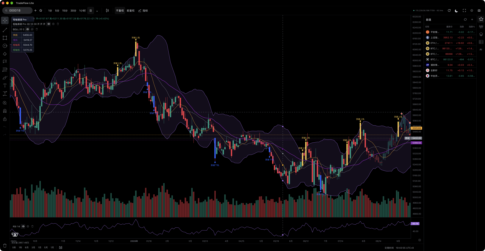
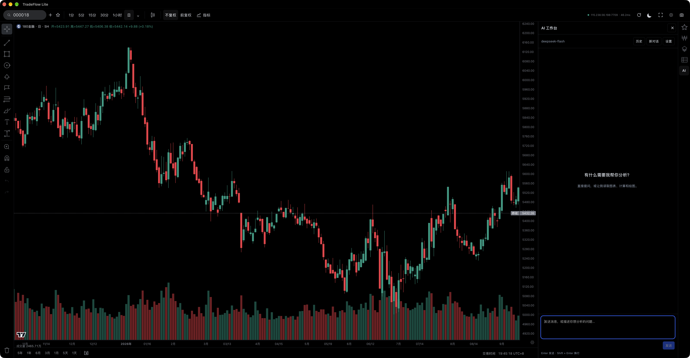

TradeFlow
适合习惯 TradingView 操作方式，重视 Pine 指标与完整、成熟看盘功能的用户。
面向 AI 的模块化交易研究工作台。
我们搭好基础设施，你用 AI 实现自己的想法。

每个交易者，都有自己的观察方式。把判断条件做成指标，把自己的数据接进来，或者增加一个顺手的功能。Lite 为这些想法留出了空间，让 AI 帮你把下一步做出来。
从你的第一个想法开始 ↗
图表、性能与模块化接口共同组成底座。
从一个指标开始，逐步构建自己的交易研究工作台。
基于 TradingView Lightweight Charts，承载行情与可视化研究。
制作、导入和复用自己的指标，让研究逻辑呈现在图表上。
统一接入不同来源的数据，保留各自清晰的数据口径。
内置助手与外部 MCP，共享可发现、可调用的应用能力。
适合习惯 TradingView 操作方式，重视 Pine 指标与完整、成熟看盘功能的用户。
适合有自己想法，希望借助 AI，把指标、数据和研究方法变成自己工具的交易者。Lite 是独立的产品方向，不是免费版。
不必先学编程。从你想解决的问题开始。